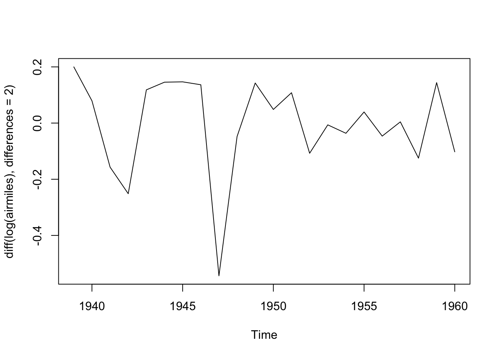
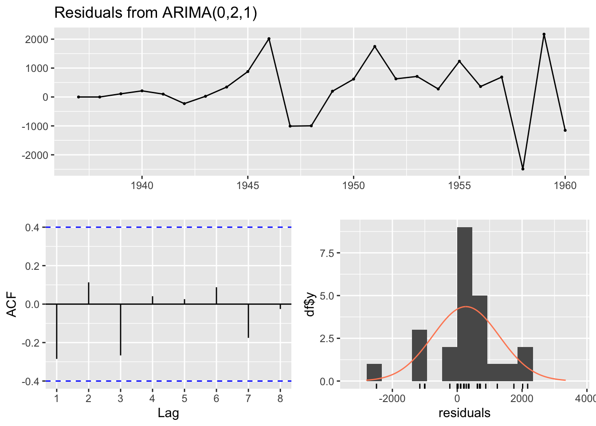

Code
library(tidyverse)
library(forecast)The last three posts have covered three of the main techniques - autoregression, integration, and moving average modelling - which combine to form the ARIMA model framework for time series analysis.
The purpose of this post is to look at an example (or maybe two) showing how ARIMA models are fit and employed in practice.
For this post I’ll make use of R’s forecast package.
library(tidyverse)
library(forecast)The dataset I’m going to use is airmiles, an example dataset from the datasets package, which is included in most R sessions by default
airmilesTime Series:
Start = 1937
End = 1960
Frequency = 1
[1] 412 480 683 1052 1385 1418 1634 2178 3362 5948 6109 5981
[13] 6753 8003 10566 12528 14760 16769 19819 22362 25340 25343 29269 30514The first thing we notice with this dataset is that it is not in the kind of tabular format we may be used to. Let’s see what class the dataset is:
class(airmiles)[1] "ts"The dataset is of class ts, which stands for time series. A ts data object is basically a numeric vector with various additional pieces of metadata attached. We can see these metadata fields are start date, end date, and frequency. The documentation for ts indicates that if frequency is 1, then the data are annual. As the series are at fixed intervals, with the start date and frequency specified, along with the length of the numeric vector, the time period associated with each value in the series can be inferred.1
airmilesWe can look at the data using the base graphics plot function:
plot(airmiles)We can see this dataset is far from stationary, being much higher towards the end of the series than at the start. This implies we should consider differencing the data to make it stationery. We can use the diff() function for this:
plot(diff(airmiles))This differenced series still doesn’t look like IID data. Remember that differencing is just one of many kinds of transformation (data pre-processing) we could consider. Also we can difference more than once.
As there cannot be negative airmiles, and the series looks exponential since the start of the series, we can can consider using a log transform:
plot(log(airmiles))
Here the data look closer to a straight line. Differencing the data now should help us get to something closer to stationary:
plot(diff(log(airmiles)))Maybe we should also look at differencing the data twice:
plot(diff(log(airmiles), differences = 2))
Maybe this is closer to the kind of stationary series that ARIMA works best with?
The visual inspection above suggested the dataset definitely needs at least one differencing term applied to it, and might need two; and might also benefit from being pre-transformed by being logged. With the forecast package, we can pass the series to the auto.arima() function, which will use an algorithm to attempt to identify the best combination of p, d and q terms to use. We can start by asking auto.arima() to determine the best ARIMA specification if the only transformation allowed is that of differencing the data, setting the trace argument to TRUE to learn more about which model specifications the algorithm has considered:
best_arima_nolambda <- auto.arima(
y = airmiles,
trace = TRUE
)
ARIMA(2,2,2) : Inf
ARIMA(0,2,0) : 384.231
ARIMA(1,2,0) : 375.735
ARIMA(0,2,1) : 375.3
ARIMA(1,2,1) : 376.9756
ARIMA(0,2,2) : 377.1793
ARIMA(1,2,2) : Inf
Best model: ARIMA(0,2,1) summary(best_arima_nolambda)Series: airmiles
ARIMA(0,2,1)
Coefficients:
ma1
-0.7031
s.e. 0.1273
sigma^2 = 1234546: log likelihood = -185.33
AIC=374.67 AICc=375.3 BIC=376.85
Training set error measures:
ME RMSE MAE MPE MAPE MASE ACF1
Training set 268.7263 1039.34 758.5374 4.777142 10.02628 0.5746874 -0.2848601We can see from the trace that a range of ARIMA specifications were considered, starting with the ARIMA(2,2,2). The selection algorithm used is detailed here, and employs a variation of AIC, called ‘corrected AIC’ or AICc, in order to compare the model specifications.
The algorithm arrives at ARIMA(0, 2, 1) as the preferred specification. That is: no autorgression (p=0), twice differenced (d=2), and with one moving average term (MA=1).
The Forecasting book linked to above also has a recommended modelling procedure for ARIMA specifications, and cautions that the auto.arima() function only performs part of this proceudure. In particular, it recommends looking at the residuals
checkresiduals(best_arima_nolambda)
Ljung-Box test
data: Residuals from ARIMA(0,2,1)
Q* = 4.7529, df = 4, p-value = 0.3136
Model df: 1. Total lags used: 5The three plots show the model residuals as a function of time (top), the distribution of residuals (bottom right), and the auto-correlation function, ACF (bottom-left), which indicates how the errors at different lags are correlated with each other. It also returns a test score, where high P-values (substantially above 0.05) should be considered evidence that the residuals appear like white noise, and so (something like) no further substantial systematic information in the data exists to be represented in the model.
In this case, the test statistic p-value is 0.31, which should be reassuring as to the appropriateness of the model specification identified.
Finally, we can use this model to forecast a given number of periods ahead. Let’s take this data to the 1990s, even though this is a dangerously long projection.
best_arima_nolambda |> forecast(h=35) |> autoplot()The central projection (dark blue line) is almost linear, but the projection intervals are wide and growing, and include projection scenarios where the number of flights in the 1990s are somewhat lower than those in the 1960s. These wide intervals should be considered a feature rather than a bug with the approach, as the further into the future we project, the more uncertain we should become.
Another option to consider within the auto.arima() function is to allow another parameter to be estimated. This is known as the lambda parameter and represents an additional possible transformation of the data before the differencing step. This lambda parameter is used as part of a Box-Cox Transformation, intended to stabilise the variance of the series. If the lambda parameter is 0, then this becomes equivalent to logging the data. We can allow auto.arima to select a Box-Cox Transformation by setting the parameter lambda = "auto"
best_arima_lambda <- auto.arima(
y = airmiles,
trace = TRUE,
lambda = "auto"
)
ARIMA(2,1,2) with drift : Inf
ARIMA(0,1,0) with drift : 190.0459
ARIMA(1,1,0) with drift : 192.1875
ARIMA(0,1,1) with drift : 192.1483
ARIMA(0,1,0) : 212.0759
ARIMA(1,1,1) with drift : 195.1062
Best model: ARIMA(0,1,0) with drift summary(best_arima_lambda)Series: airmiles
ARIMA(0,1,0) with drift
Box Cox transformation: lambda= 0.5375432
Coefficients:
drift
18.7614
s.e. 2.8427
sigma^2 = 194.3: log likelihood = -92.72
AIC=189.45 AICc=190.05 BIC=191.72
Training set error measures:
ME RMSE MAE MPE MAPE MASE ACF1
Training set 123.1317 934.6956 724.6794 -5.484572 12.91378 0.5490357 -0.169863In this case, a lambda value of about 0.54 has been identified, and a different ARIMA model specification selected. This specification is listed as ARIMA(0,1,0) with drift. This with drift term means the series are recognised as non-stationary, but where (after transformation) there is an average (in this case) constant amount upwards drift in the values as we progress through the series. 2 Let’s check the residuals for this model:
checkresiduals(best_arima_lambda)
Ljung-Box test
data: Residuals from ARIMA(0,1,0) with drift
Q* = 3.9064, df = 5, p-value = 0.563
Model df: 0. Total lags used: 5The test P-value is even higher in this case, suggesting the remaining residuals appear to behave even more like white noise than in the previous specification.
Now to look at projections from the model into the 1990s:
best_arima_lambda |> forecast(h=35) |> autoplot()
Using this specification we get a qualitatively different long-term projection with, on the identity scale of the data itself, a much narrower long-term projection interval.
So, the two different ARIMA specifications arrived at - one with additional pre-transformation of the data before differencing; the other without - lead to qualitatively different long-term projections. Do we have any reason to presume one specification is better than the other?
I guess we could look at the AIC and BIC of the two models:
AIC(best_arima_nolambda, best_arima_lambda) df AIC
best_arima_nolambda 2 374.6684
best_arima_lambda 2 189.4459BIC(best_arima_nolambda, best_arima_lambda) df BIC
best_arima_nolambda 2 376.8505
best_arima_lambda 2 191.7169Here the lower scores for the model with a Box-Cox transformation suggest it should be preferred. However, as both functions warn, the number of observations differ between the two specifications. This is likely because the no-lambda version differences the data twice, whereas the with-lambda specification differences the data once, and so the no-lambda version should have one fewer observation. Let’s check this:
n_obs_nolambda <- summary(best_arima_nolambda)$nobs
n_obs_lambda <- summary(best_arima_lambda)$nobs
print(paste("Observations for no lambda:", n_obs_nolambda))[1] "Observations for no lambda: 22"print(paste("Observations for with-lambda:", n_obs_lambda))[1] "Observations for with-lambda: 23"Yes. This seems to be the cause of the difference.
Another way of comparing the models is by using the accuracy() function, which reports a range of accuracy measures:
print("No lambda specification: ")[1] "No lambda specification: "accuracy(best_arima_nolambda) ME RMSE MAE MPE MAPE MASE ACF1
Training set 268.7263 1039.34 758.5374 4.777142 10.02628 0.5746874 -0.2848601print("With-lambda specification: ")[1] "With-lambda specification: "accuracy(best_arima_lambda) ME RMSE MAE MPE MAPE MASE ACF1
Training set 123.1317 934.6956 724.6794 -5.484572 12.91378 0.5490357 -0.169863What’s returned by accuracy() comprises one row (labelled Training set) and seven columns, each for a different accuracy metric. A common (and relatively easy-to-understand) accuracy measure is RMSE, which stands for (square) root mean squared error. According to this measure, the Box-Cox transformed ARIMA model outperforms the untransformed (by double-differenced) ARIMA model, so perhaps it should be preferred.
However, as the act of transforming the data in effect changes (by design) the units of the data, perhaps RMSE is not appropriate to use for comparison. Instead, there is a measure called MAPE, which stands for “mean absolute percentage error”, that might be more appropriate to use because of the differences in scales. According to this measure, the Box-Cox transformed specification has a higher error score than the no-lambda specification (around 13% instead of around 10%), suggesting instead the no-lambda specification should be preferred instead.
So what to do? Once again, the ‘solution’ is probably just to employ some degree of informed subjective judgement, along with a lot of epistemic humility. The measures above can help inform our modelling decisions, but they cannot make these decisions for us.
For the first three posts in this time-series miniseries, we looked mainly at the theory of the three components of the ARIMA time series modelling approach. This is the first approach where we’ve used ARIMA in practice. Hopefully you got a sense of two different things:
forecast, getting R to produce and forecast from an ARIMA model is relatively quick and straightforward to do in practice.Indeed, if you review the main book associated with the forecasting package, you can see that ARIMA comprises just a small part of the overall time series toolkit. There’s a lot more that can be covered, including some methods that are simpler to ARIMA, some methods (in particular SARIMA) which are further extensions of ARIMA, some methods that are alternatives to ARIMA, and some methods that are decidedly more complicated than ARIMA. By focusing on the theory of ARIMA in the last three posts, I’ve aimed to cover something in the middle-ground of the overall toolbox.
Coming up: to be determined!
The information appears to be ‘overdeterimined’, as one of the metadata fields should be inferrable given the other pieces of information. I suspect this works as something like a ‘checksum’ test, to ensure the data are as intended.↩︎
Autoregressive terms p can be included as part of non-stationary series, and there can be an arbitrary number of differencing operations d, but the moving average term q is only suitable for stationary series. So, for example, ARIMA(1,0,0) with drift can be possible, as can ARIMA(1,1,0) with drift, but ARIMA(0,0, 1) with drift is not a legitimate specification.↩︎